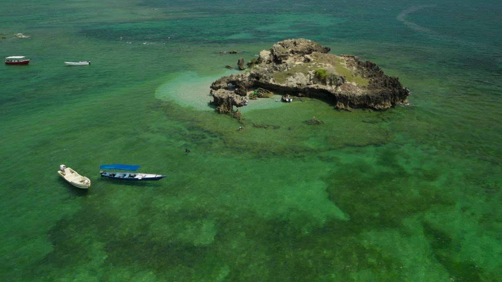
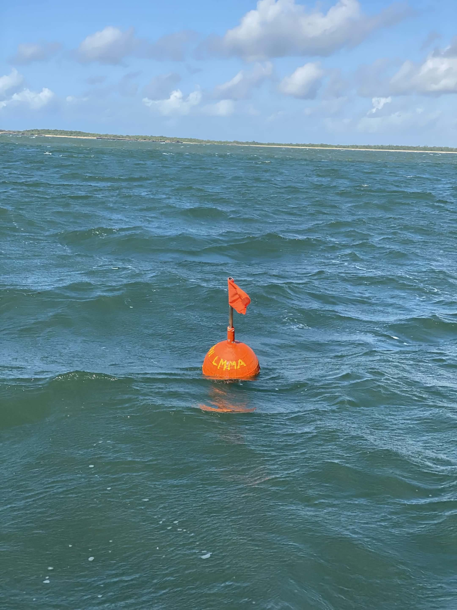
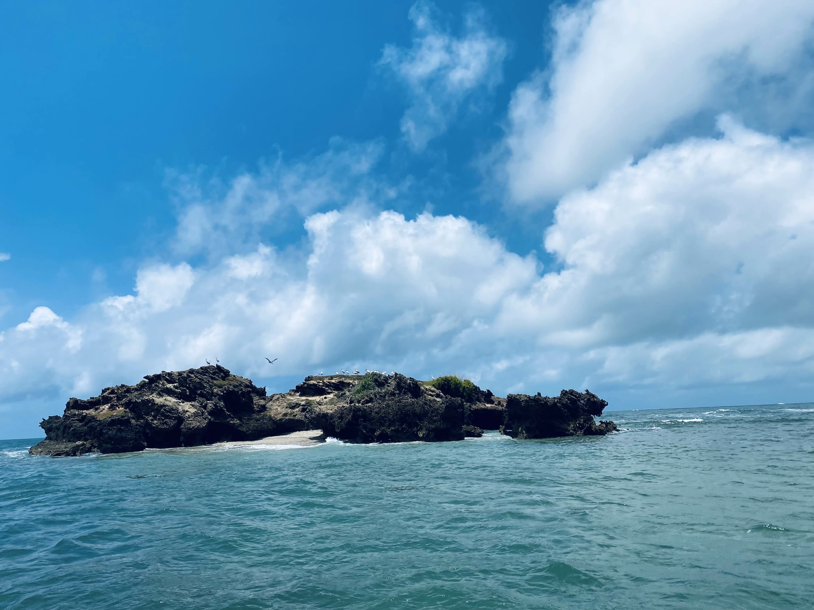

About Patte conservation
Patte Conservation partners with communities to protect marine ecosystems and livelihoods.
aboutIweni Locally Managed Marine Area - Fostering sustainable and equitable marine ecosystems that benefit both the environment and local communities through collaborative management.

Contributing to sustainable food sources through responsible marine resource management

Supporting sustainable livelihoods and community well-being through eco-tourism

Preserving coral reef health and promoting marine biodiversity

Ensuring long-term viability of marine resources for future generations

Patte Conservation partners with communities to protect marine ecosystems and livelihoods.
about
Protecting marine ecosystems through community-driven conservation initiatives
plans
Fees fund marine conservation and support local community development through eco-tourism.
pay now
Partnering with local communities for lasting marine conservation and sustainability.
join now